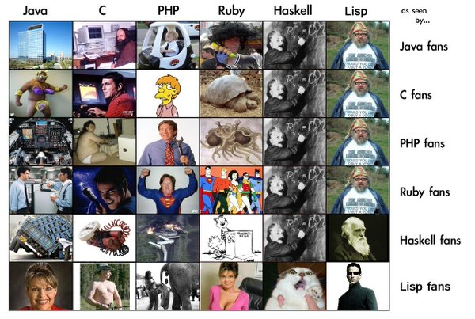

프로그래밍 언어와 커뮤니티
 언어별 개발자가 서로를 바라보는 시선
개발자들의 수준, 라이브러리 생태계의 퀄리티와 다양성, 그리고 개발 프로세스의 고도화 정도는 해당 언어 커뮤니티의 수준과 성숙도를 드러내는 지표다. 높은 수준과 성숙한 커뮤니티를 가진 언어는 그렇지 않은 언어에 비해 조악한 workaround가 현저히 적다. 구성원들 각자가 겪었던 문제들을 훌륭한 방식으로 이미 해결해 놓았기 때문이다.
간단한 예를 들어보자. PHP는 라이브러리 생태계의 다양성과 그 규모는 충분하지만, 개발자들의 수준이 낮기 때문에 좋은 커뮤니티를 가지고 있다고 할 수 없다. 수준 높은 커뮤니티를 가지지 못했기 때문에, 다른 언어였다면 레딧이나 해커뉴스에서 수 차례 조롱당하고 묻혔을 이런 조악한 workaround들이 PHP에선 판을 친다. 실제로 PHP 공식문서에 달린 코드 스니펫들을 읽다보면 $GLOBAL 따위의 전역변수를 이용하는 hack들을 즐겁게 공유하는 것을 어렵지 않게 볼 수 있다.
반면 Haskell은 똑똑한 개발자들이 커뮤니티 주류를 이루고, 그들이 작성하는 라이브러리들은 매번 놀라운 수준의 퀄리티를 자랑한다. 그러나 프로덕션 환경에서 사용하기엔 그 양과 다양성이 부족하기 때문에, 데이터 타입과 관련해서 조악한 workaround들이 사용되는 모습을 가끔 볼 수 있다. stack이 도입되기 이전에 cabal을 사용하며 겪던 난감한 의존성 관리방식도 라이브러리 생태계의 규모 부족에서 기인한다.
반면 Python과 JavaScript는 적당한 스펙트럼의 개발자들, 훌륭한 라이브러리 생태계, 그리고 선진화된 개발 프로세스가 정립돼있다. 먼저 평균적인 개발자들의 수준이 Haskell 개발자들만큼 높진 않지만, 그렇다고 해서 PHP 만큼 허접하진 않다. 라이브러리 생태계 측면에선 Github 통계자료를 통해 알 수 있듯이 그 규모와 퀄리티에서 압도적이며, babel과 webpack의 HMR을 위시한 프론트엔드 개발 프로세스는 어떤 언어보다도 고도화 되어있다. 이처럼 두 언어는 성숙한 커뮤니티를 가졌기 때문에, 다른 언어들에 비해 조잡한 workaround가 눈에 띄게 적은 편이다.